01
AI Interview Agent 基于 Multi-Agent 的智能面试训练平台
多智能体协同的面试训练系统：简历解析、递进式面试、自动评分、报告生成全流程自动化。
角色 · 独立完成
背景
模拟面试需要多角色配合——理解简历、设计提问、评估回答、撰写报告——单一模型难以兼顾，因此拆分为多智能体分工协作。
架构
设计 Multi-Agent 协作架构：将复杂面试任务拆解为 Resume Analyst、Interviewer、Evaluator、Report Writer 四个专业 Agent，由 Orchestrator 统一负责任务路由、状态管理与执行编排，串起「简历解析 → 递进式面试 → 自动评分 → 报告生成」完整 Agent Workflow。知识检索（Knowledge Retriever）设计为确定性检索模块，由 Agent 作为工具调用而非第 5 个 Agent——把「有自主决策的 Agent」与「被调用的检索工具」分开，避免无谓的编排复杂度。
技术亮点
构建 Shared Memory + Message Bus 通信机制，实现 Agent 间上下文共享与事件发布/订阅；根据用户回答与历史评分动态调整后续面试路径，支持不同 Agent 独立替换、测试与扩展。Evaluator 从正确性、逻辑、深度、表达四维度自动评分并触发自适应追问；LLM 层接入 DeepSeek / OpenAI / Anthropic / Ollama 多模型。
工程实践
完成 JWT 鉴权、限流、会话恢复与 SSE 流式输出；编写 149 项后端 + 114 项前端测试；通过 Docker Compose 与 GitHub Actions 实现 CI/CD。
结果
以「RAG 架构」主题跑通完整面试：8 题全作答、0 跳过，四维评分 正确性 92 · 逻辑 95 · 深度 93 · 表达 90，总体评级 优秀。面试官沿单一主题递进追问，逐层深入到打分函数设计与不确定性消解。
PythonFastAPIReactMulti-AgentSSESQLiteDockerCI/CD
四 Agent 协同 · 调度 + 共享记忆 + 消息总线
四个专业 Agent 由 Orchestrator 编排，经 Message Bus 通信、Shared Memory 共享上下文；Knowledge Retriever 是确定性检索工具，不属于 Agent。
运行界面
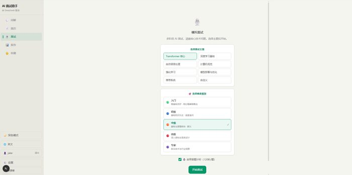
面试对话
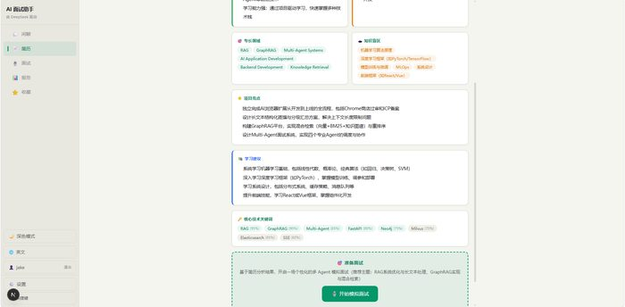
简历分析
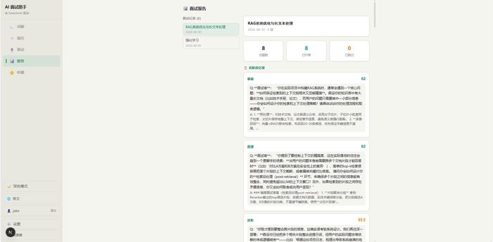
四维评分
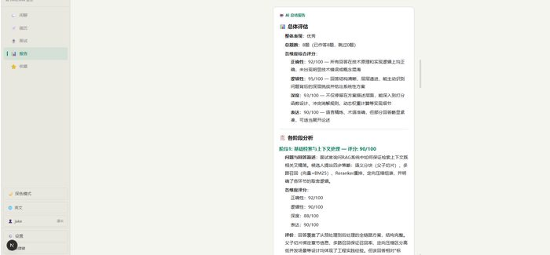
学习报告
02
GraphMind 基于 GraphRAG 的知识检索与推理平台
工程化 GraphRAG 平台：文档上传、异步入库、知识检索与智能问答，含自动化评测。
角色 · 独立完成
背景
纯向量检索难以回答「跨文档的实体关系与多跳推理」类问题，需要引入知识图谱补足召回盲区。
架构
构建混合检索（Hybrid Retrieval）系统，融合向量检索、BM25 与知识图谱三路召回：Milvus 负责语义检索、Elasticsearch 负责关键词匹配、Neo4j 支持实体关系与多跳推理，经 RRF 融合去重与 Reranker 精排，提升复杂问题的检索覆盖与关联能力。
技术亮点
设计 RAG 自动化评测流程：通过 Citation Pruner 过滤弱相关上下文，构建评测基准数据集，从 Recall、MRR、Citation Precision、拒答准确率等指标进行回归评测，实现检索策略变更的量化验证。
工程实践
基于文档状态机 + Redis 异步队列构建 Knowledge Pipeline，解耦解析、抽取与图谱构建流程，支持失败重试与 Dead Letter Queue；通过链路耗时追踪与性能预算告警定位检索及推理瓶颈。
结果
检索策略的每次变更都有 Recall、MRR、Citation Precision、拒答准确率等指标佐证，检索质量可量化、可追溯；入库链路失败可重试、可观测。
PythonFastAPINext.jsNeo4jRedisMilvusElasticsearchOpenTelemetry
混合检索 · 三路融合 + 重排序
查询并行走向量、BM25、图谱三路，结果经 RRF 融合去重、再经 Reranker 重排——用多路互补覆盖单路检索的召回盲区。
运行界面
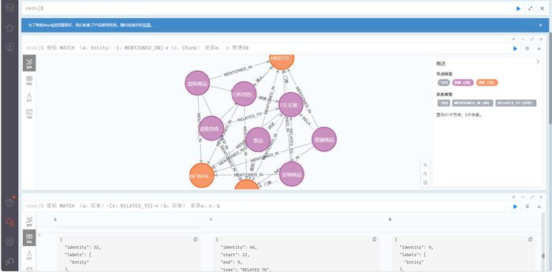
知识图谱 · Neo4j
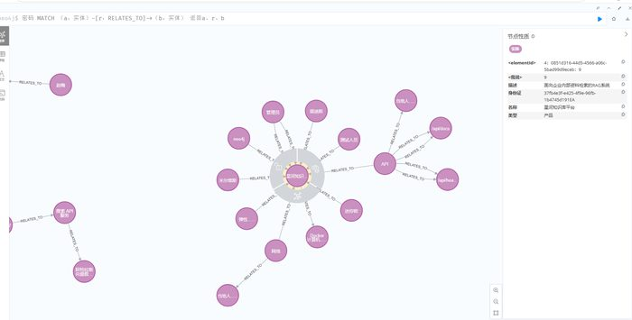
知识图谱 · Neo4j
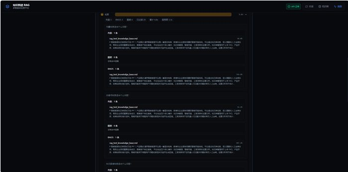
检索问答
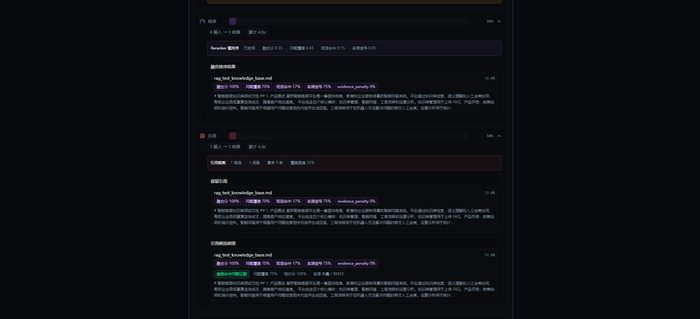
检索问答
03
鉴来助手 长文本结构化蒸馏的 AI 阅读助手
已上线 Chrome + Edge 双商店的浏览器扩展；针对数百章长文本的三级 Context 管理方案。
角色 · 独立完成
背景
网文连载数百章、追更数月，早期伏笔与人物关系在记忆中早已断裂；数百章长文本更直接触及 LLM Context Window 的成本边界。
架构
针对超长文本，设计「章节级结构化蒸馏 → 60 章阶段级汇总 → 全局记忆」三级 Context 管理方案，将人物、事件、伏笔、术语等关键信息结构化存储，通过分层压缩与聚合降低长文本直接注入成本，减少跨章节信息丢失。
技术亮点
单章可处理约 8000 字原始文本；实现按需 Context Retrieval 与动态上下文组合机制，根据用户问题选择章节摘要、结构化记忆与原始文本组合，支持跨章节伏笔关联、人物关系分析、划词查询与长文本问答。
工程实践
基于 FastAPI + SSE 实现异步任务与流式响应，完成 Chromium 浏览器扩展、后端服务与线上部署；通过 host_permissions 权限治理通过 Chrome / Edge 商店审核，完成 ICP / 公安备案与多渠道分发。
结果
已上线 Chrome + Edge 双商店，为国内用户提供免梯 zip 与油猴脚本版，覆盖无法访问商店的场景。
FastAPIPythonJavaScriptSSESQLiteNginxLinux
三级 Context 管理 · 章节级 → 阶段级 → 全局
数百章原文经「章节级结构化蒸馏 → 60 章阶段级汇总 → 全局记忆」三级压缩为可检索记忆，查询时按需回看原文——规避一次性长上下文的高成本与检索漂移。
产品界面
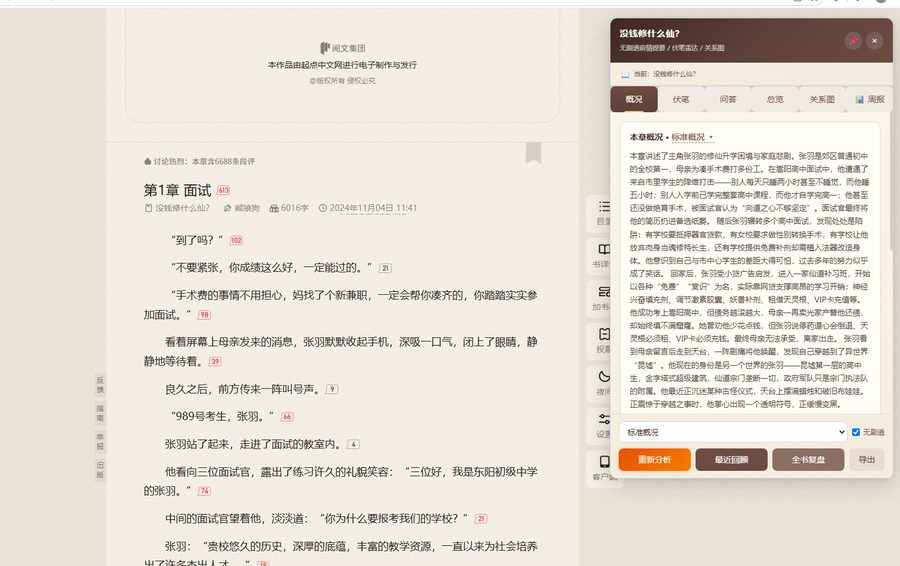
标准概况
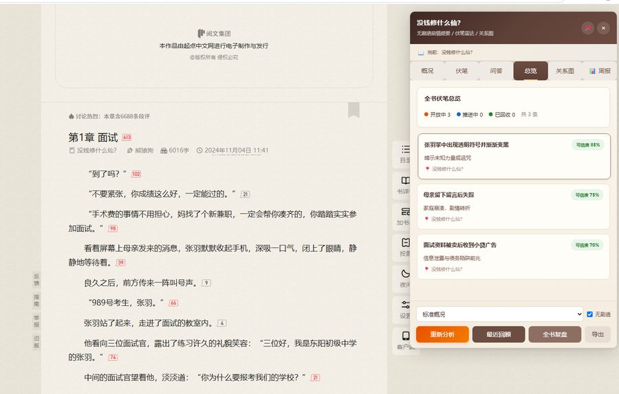
伏笔总览
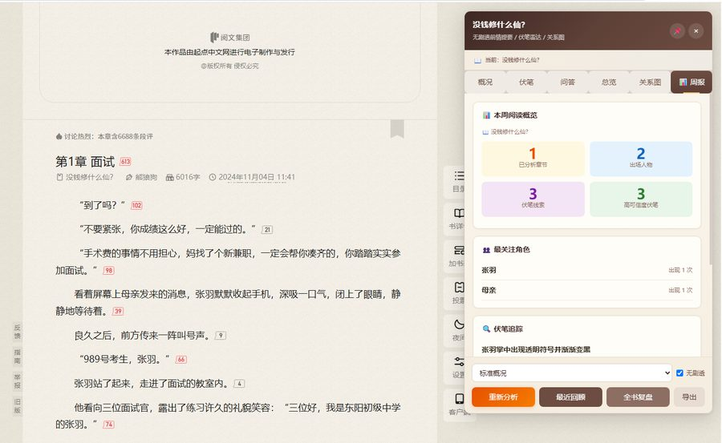
周报
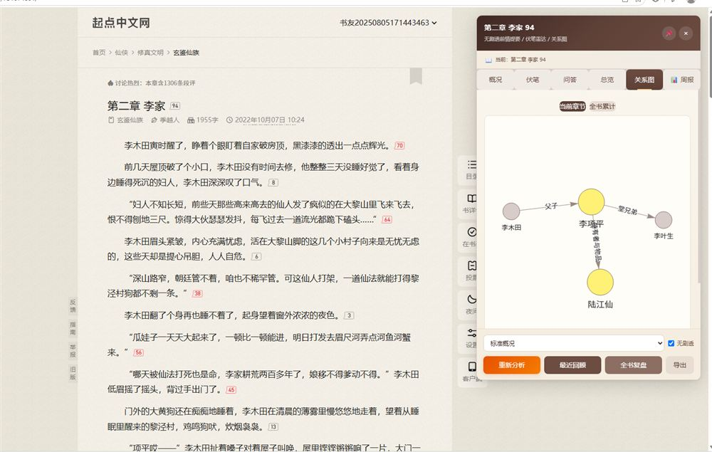
人物关系图